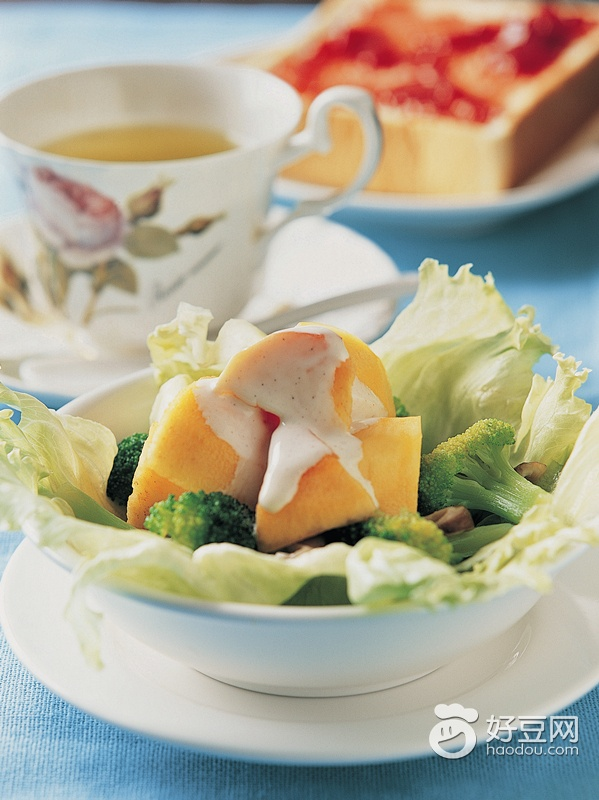

【日常保健】防癌饮食8大提醒
2014-05-08 13:50:23
对于大多数健康人群来说，均衡的膳食可为身体提供丰富的营养素供应，若是身体缺乏某些营养素，也可以通过增加某些食物的摄入来达到补充的目的。

文：张元国
来源：《大众健康》
癌症离我们有多远？扪心自问，想来这个问题令不少人心中打鼓，特别是看到自己的亲人、朋友、同事、邻居被确诊为癌症患者时，危机感更会加重。幸好癌症是一种可防可治的慢性疾病，国际抗癌联盟发布报告称，戒烟限酒、健康饮食，锻炼身体、积极控制与癌症相关的感染、定期体检，这些都是预防癌症的方法。
对于每个人来说，要想远离癌症，首先要从健康饮食入手。大家不妨先来看看北京市肿瘤防治办公室提出的防癌饮食8点提醒，再对照自己的日常饮食，找出那些可能致癌的隐患，并加以纠正，为自己构筑第一道“防火墙”。
1.主要吃植物来源的食物
多数具有预防癌症作用的膳食主要由植物来源食物组成，即富含营养素、膳食纤维以及低能量的植物性食物为主的膳食，这些营养物质可防止细胞蛋白质和DNA被氧化损伤。
防癌饮食建议：每天都要吃400克以上蔬菜和水果，包括红、黄、绿、紫、橙、白等不同颜色的非淀粉类蔬果，这里面不包括山药、土豆等。
每餐都吃些粗加工的谷类或豆类，如小麦、大米、玉米、高梁、大麦、燕麦、黑麦等谷类，以及大豆、红豆、绿豆、黑豆、白扁豆等豆类和豆制品。
限制精加工淀粉类食物的摄入，如面包、蛋糕、饼干、汉堡包、意大利面等，这些美食虽然诱人，但不可多吃。
2.限制高能量密度食物
过食高能量密度食物，不仅可引起体重超标和肥胖，还会明显增加结直肠癌、食管癌、子宫内膜癌、胰腺癌、肾癌和绝经后期乳腺癌的患病风险。
防癌饮食建议：烘烤食品、甜点、糖果、汉堡包、炸鸡、炸薯条、方便面、含糖的可乐及果汁饮料等美味，都属于高能量密度食物，平时应尽量少吃，以保持合理体重，避免肥胖。
3.少吃红肉和加工肉类
平时大家爱吃的羊肉、牛肉、猪肉等肉类，都属红肉之列，这些红肉经过烟熏及腌制等方法还可制成火腿、咸猪肉、热狗、熏牛肉等熟肉制品。这些食物中含有大量动物脂肪，适量食用可为人体补充蛋白质、锌等营养素，但吃得过多则会导致体重增加，并诱发结直肠癌。
防癌饮食建议：红肉的摄入量每周不宜超过500克，这个重量是以熟肉重量计算的。若是按照生肉的重量来计算，500克的熟肉相当于700~750克生肉。
4.限制酒精的摄入量
酒精早已被世界癌症研究基金会列为人类致癌物的“黑名单”，其致癌程度取决于饮用量，而与酒精饮品的类型无关。大量研究显示，酒类饮品不仅是口腔癌、咽癌、喉癌、食管癌、乳腺癌、男性结直肠癌等恶性肿瘤的致病诱因之一，还可能导致肝癌和女性结直肠癌。此外，酒精还是烟草的协同致癌物，烟草会导致DNA发生特异性突变，这些突变在酒精存在时无法有效修复。
防癌饮食建议：爱喝酒的人必须限量：男性每天摄入酒精量不超过20～30克，女士不超过10～15克。孕妇和儿童则不宜饮用任何酒精类饮料。
5.不推荐食用膳食补充剂来防癌
食物是人体所需各种营养素的最好来源，而非膳食补充剂。无论是粗加工的谷物、豆类，还是新鲜的鱼、肉、蛋和蔬果，都能为人体提供充足的蛋白质、维生素A、B族维生素、维生素C、维生素E等，以及锌、铁、钾、硒、钠等微量元素。
在一些特定的、通常是高危人群中进行的研究提示，某些补充剂对癌症有预防作用，但这些结果不一定适用于普通人群，但这些结果不一定适用于普通人群，他们的受益情况可能不同。证据表明，高剂量营养素补充剂可能有保护作用，也可能诱发癌症，而且可能产生意想不到的副作用。
防癌饮食建议：对于大多数健康人群来说，均衡的膳食可为身体提供丰富的营养素供应，若是身体缺乏某些营养素，也可以通过增加某些食物的摄入来达到补充的目的。老年人、慢性病患者、病后体虚或是体质虚弱的人，最好在专业营养师和医生的指导下服用适量的营养补充剂。
6.婴儿最好完全吃母乳6个月
6个月的完全母乳喂养，是指在婴儿出生的6个月内仅用母乳喂养，不包括其他食物或包括水在内的饮料。6个月以后可在母乳喂养的同时，适当添加辅食。这样做既可预防宝宝体重过度增加，预防由超重和肥胖引起的癌症，还可降低母亲患乳腺癌的风险。
防癌饮食建议：母乳喂养对母婴都有许多益处，因此职场女性应坚持母乳喂养，特别是孩子刚出生的前6个月应坚持完全母乳喂养。
7.避免食用发霉食品，限制烧烤食物
新鲜的蔬果、肉类和谷物是一日三餐的首选，烤烤、烟熏、腌制的食物应尽量少吃，不要吃发霉的食物，特别是玉米、花生等已经霉变的食物，以免增加患上癌症的风险。
8.癌症患者要严守饮食建议
已经患癌症的人群，可根据医生的建议合理安排膳食和进补事宜。若医生没有对患者提出特殊的膳食要求，患者仍要遵循上述饮食建议。
对于正在进行手术、化疗或放疗的癌症患者，术后和晚期癌症患者，因为身体情况特殊，要遵守专业医师给出的特殊营养膳食建议。